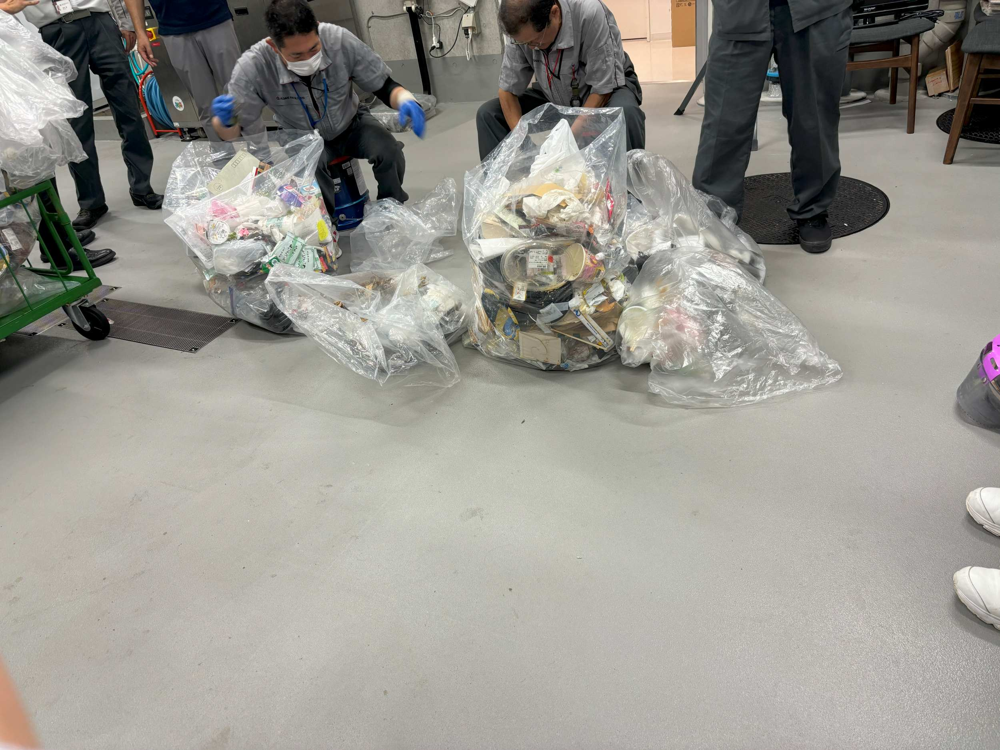

大学内での循環を考えるにあたって、捨てられているゴミについて理解するため、集積場を見学した。
燃えるごみは平日に700~1000Kgで、これは比較的少ないらしい。
神奈川大学では、生ごみは生ごみ処理機で微生物分解しているため、少ないのではないかという話だった。
プラスチックごみは平日200~800Kgらしい。ペットボトルに関しては、夏は水分補給の機会が増えることから、捨てられる量もかなり増えると分かった。

また、今回最も見学の意味を感じたポイントは、
集積場の方々が学内で集められたごみを手作業で分別しているということである。
学内のごみ箱は、横浜市の分別に従いプラスチック・燃えるごみ・ペットボトル缶と分かれている。
しかし、分別方法は自治体によって異なり、学生の出身地や在住地は様々である。
そのため、ごみ箱がわかれているにも関わらず、横浜市に従った分別がされない状態でごみ箱に捨てられるごみは非常に多い。
特に多いのが、ドリンクのカップと蓋を分けずに捨てるケースや昼食で出たごみを燃えるごみ・プラスチック関係なくビニール袋に入れてしまうというケースだった。
ビニール袋に入れてしまうと、中見が見えないこともあるため、確認のため一度袋を開け確認するという作業が必要になる。この作業はかなりの労力と時間を要する。
良かれと思って汚れたごみをまとめている人も、注意が必要となる。
この見学から、捨てる段階での分別が課題であることが分かった。